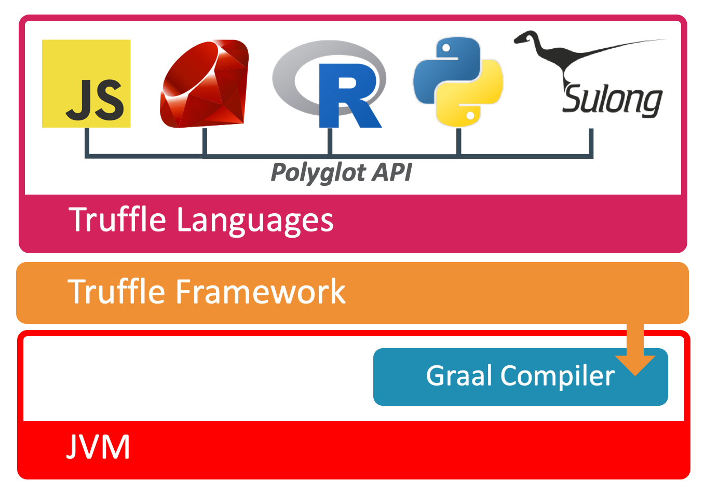
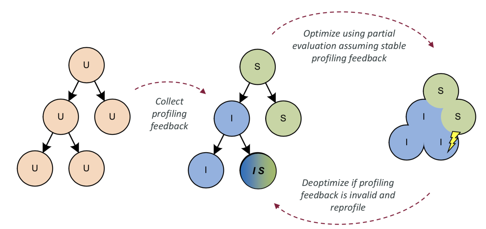

35 | Truffle：语言实现框架
今天我们来聊聊 GraalVM 中的语言实现框架 Truffle。
我们知道，实现一门新编程语言的传统做法是实现一个编译器，也就是把用该语言编写的程序转换成可直接在硬件上运行的机器码。
通常来说，编译器分为前端和后端：前端负责词法分析、语法分析、类型检查和中间代码生成，后端负责编译优化和目标代码生成。
不过，许多编译器教程只涉及了前端中的词法分析和语法分析，并没有真正生成可以运行的目标代码，更谈不上编译优化，因此在生产环境中并不实用。
另一种比较取巧的做法则是将新语言编译成某种已知语言，或者已知的中间形式，例如将 Scala、Kotlin 编译成 Java 字节码。
这样做的好处是可以直接享用 Java 虚拟机自带的各项优化，包括即时编译、自动内存管理等等。因此，这种做法对所生成的 Java 字节码的优化程度要求不高。
不过，不管是附带编译优化的编译器，还是生成中间形式并依赖于其他运行时的即时编译优化的编译器，它们所针对的都是编译型语言，在运行之前都需要这一额外的编译步骤。
与编译型语言相对应的则是解释型语言，例如 JavaScript、Ruby、Python 等。对于这些语言来说，它们无须额外的编译步骤，而是依赖于解释执行器进行解析并执行。
为了让该解释执行器能够高效地运行大型程序，语言实现开发人员通常会将其包装在虚拟机里，并实现诸如即时编译、垃圾回收等其他组件。这些组件对语言设计 本身并无太大贡献，仅仅是为了实用性而不得不进行的工程实现。
在理想情况下，我们希望在不同的语言实现中复用这些组件。也就是说，每当开发一门新语言时，我们只需要实现它的解释执行器，便能够直接复用即时编译、垃圾回收等组件，从而达到高性能的效果。这也是 Truffle 项目的目标。接下来，我们就来讲讲这个项目。
Truffle 项目简介
Truffle 是一个用 Java 写就的语言实现框架。基于 Truffle 的语言实现仅需用 Java 实现词法分析、语法分析以及针对语法分析所生成的抽象语法树（Abstract Syntax Tree，AST）的解释执行器，便可以享用由 Truffle 提供的各项运行时优化。
就一个完整的 Truffle 语言实现而言，由于实现本身以及其所依赖的 Truffle 框架部分都是用 Java 实现的，因此它可以运行在任何 Java 虚拟机之上。
当然，如果 Truffle 运行在附带了 Graal 编译器的 Java 虚拟机之上，那么它将调用 Graal 编译器所提供的 API，主动触发对 Truffle 语言的即时编译，将对 AST 的解释执行转换为执行即时编译后的机器码。
在这种情况下，Graal 编译器相当于一个提供了即时编译功能的库，宿主虚拟机本身仍可使用 C2 作为其唯一的即时编译器，或者分层编译模式下的 4 层编译器。

我们团队实现并且开源了多个 Truffle 语言，例如JavaScript，Ruby，R，Python，以及可用来解释执行 LLVM bitcode 的Sulong。关于 Sulong 项目，任何能够编译为 LLVM bitcode 的编程语言，例如 C/C++，都能够在这上面运行。
下图展示了运行在 GraalVM EE 上的 Java 虚拟机语言，以及除 Python 外 Truffle 语言的峰值性能指标（2017 年数据）。

这里我采用的基线是每个语言较有竞争力的语言实现。
- 对于 Java 虚拟机语言（Java、Scala），我比较的是使用 C2 的 HotSpot 虚拟机和使用 Graal 的 HotSpot 虚拟机。
- 对于 Ruby，我比较的是运行在 HotSpot 虚拟机之上的 JRuby 和 Truffle Ruby。
- 对于 R，我比较的是 GNU R 和基于 Truffle 的 FastR。
- 对于 C/C++，我比较的是利用 LLVM 编译器生成的二进制文件和基于 Truffle 的 Sulong。
- 对于 JavaScript，我比较的是 Google 的 V8 和 Graal.js。
针对每种语言，我们运行了上百个基准测试，求出各个基准测试峰值性能的加速比，并且汇总成图中所示的几何平均值（Geo. mean）。
简单地说明一下，当 GraalVM 的加速比为 1 时，代表使用其他语言实现和使用 GraalVM 的性能相当。当 GraalVM 加速比超过 1 时，则代表 GraalVM 的性能较好；反之，则说明 GraalVM 的性能较差。
我们可以看到，Java 跑在 Graal 上和跑在 C2 上的执行效率类似，而 Scala 跑在 Graal 上的执行效率则是跑在 C2 上的 1.2 倍。
对于 Ruby 或者 R 这类解释型语言，经由 Graal 编译器加速的 Truffle 语言解释器的性能十分优越，分别达到对应基线的 4.1x 和 4.5x。这里便可以看出使用专业即时编译器的 Truffle 框架的优势所在。
不过，对于同样拥有专业即时编译器的 V8 来说，基于 Truffle 的 Graal.js 仍处于追赶者的位置。考虑到我们团队中负责 Graal.js 的工程师仅有个位数，能够达到如此性能已属不易。现在 Graal.js 已经开源出来，我相信借助社区的贡献，它的性能能够得到进一步的提升。
Sulong 与传统的 C/C++ 相比，由于两者最终都将编译为机器码，因此原则上后者定义了前者的性能上限。
不过，Sulong 将 C/C++ 代码放在托管环境中运行，所有代码中的内存访问都会在托管环境的监控之下。无论是会触发 Segfault 的异常访问，还是读取敏感数据的恶意访问，都能够被 Sulong 拦截下来并作出相应处理。
Partial Evaluation
如果要理解 Truffle 的原理，我们需要先了解 Partial Evaluation 这一个概念。
假设有一段程序P，它将一系列输入I转换成输出O（即P: I -> O）。而这些输入又可以进一步划分为编译时已知的常量IS，和编译时未知的ID。
那么，我们可以将程序P: I -> O转换为等价的另一段程序P': ID -> O。这个新程序P'便是P的特化（Specialization），而从P转换到P'的这个过程便是所谓的 Partial Evaluation。
回到 Truffle 这边，我们可以将 Truffle 语言的解释执行器当成P，将某段用 Truffle 语言写就的程序当作IS，并通过 Partial Evaluation 特化为P'。由于 Truffle 语言的解释执行器是用 Java 写的，因此我们可以利用 Graal 编译器将P'编译为二进制码。
下面我将用一个具体例子来讲解。
假设有一门语言 X，只支持读取整数参数和整数加法。这两种操作分别对应下面这段代码中的 AST 节点Arg和Add。
abstract class Node {
abstract int execute(int[] args);
}
class Arg extends Node {
final int index;
Arg(int i) { this.index = i; }
int execute(int[] args) {
return args[index];
}
}
class Add extends Node {
final Node left, right;
Add(Node left, Node right) {
this.left = left;
this.right = right;
}
int execute(int[] args) {
return left.execute(args) +
right.execute(args);
}
}
static int interpret(Node node, int[] args) {
return node.execute(args);
}
所谓 AST 节点的解释执行，便是调用这些 AST 节点的execute方法；而一段程序的解释执行，则是调用这段程序的 AST 根节点的execute方法。
我们可以看到，Arg节点和Add节点均实现了execute方法，接收一个用来指代程序输入的 int 数组参数，并返回计算结果。其中，Arg节点将返回 int 数组的第i个参数（i是硬编码在程序之中的常量）；而Add节点将分别调用左右两个节点的execute方法， 并将所返回的值相加后再返回。
下面我们将利用语言 X 实现一段程序，计算三个输入参数之和arg0 + arg1 + arg2。这段程序解析生成的 AST 如下述代码所示：
// Sample program: arg0 + arg1 + arg2
sample = new Add(new Add(new Arg(0), new Arg(1)), new Arg(2));
这段程序对应的解释执行则是interpret(sample, args)，其中args为代表传入参数的 int 数组。由于sample是编译时常量，因此我们可以将其通过 Partial Evaluation，特化为下面这段代码所示的interpret0方法：
static final Node sample = new Add(new Add(new Arg(0), new Arg(1)), new Arg(2));
static int interpret0(int[] args) {
return sample.execute(args);
}
Truffle 的 Partial Evaluator 会不断进行方法内联（直至遇到被`@TruffleBoundary注解的方法）。因此，上面这段代码的interpret0方法，在内联了对Add.execute方法的调用之后，会转换成下述代码：
static final Node sample = new Add(new Add(new Arg(0), new Arg(1)), new Arg(2));
static int interpret0(int[] args) {
return sample.left.execute(args) + sample.right.execute(args);
}
同样，我们可以进一步内联对Add.execute方法的调用以及对Arg.execute方法的调用，最终将interpret0转换成下述代码：
static int interpret0(int[] args) {
return args[0] + args[1] + args[2];
}
至此，我们已成功地将一段 Truffle 语言代码的解释执行转换为上述 Java 代码。接下来，我们便可以让 Graal 编译器将这段 Java 代码编译为机器码，从而实现 Truffle 语言的即时编译。
节点重写
Truffle 的另一项关键优化是节点重写（node rewriting）。
在动态语言中，许多变量的类型是在运行过程中方能确定的。以加法符号+为例，它既可以表示整数加法，还可以表示浮点数加法，甚至可以表示字符串加法。
如果是静态语言，我们可以通过推断加法的两个操作数的具体类型，来确定该加法的类型。但对于动态语言来说，我们需要在运行时动态确定操作数的具体类型，并据此选择对应的加法操作。这种在运行时选择语义的节点，会十分不利于即时编译，从而严重影响到程序的性能。
Truffle 语言解释器会收集每个 AST 节点所代表的操作的类型，并且在即时编译时，作出针对所收集得到的类型 profile 的特化（specialization）。
还是以加法操作为例，如果所收集的类型 profile 显示这是一个整数加法操作，那么在即时编译时我们会将对应的 AST 节点当成整数加法；如果是一个字符串加法操作，那么我们会将对应的 AST 节点当成字符串加法。
当然，如果该加法操作既有可能是整数加法也可能是字符串加法，那么我们只好在运行过程中判断具体的操作类型，并选择相应的加法操作。

这种基于类型 profile 的优化，与我们以前介绍过的 Java 虚拟机中解释执行器以及三层 C1 编译代码十分类似，它们背后的核心都是基于假设的投机性优化，以及在假设失败时的去优化。
在即时编译过后，如果运行过程中发现 AST 节点的实际类型和所假设的类型不同，Truffle 会主动调用 Graal 编译器提供的去优化 API，返回至解释执行 AST 节点的状态，并且重新收集 AST 节点的类型信息。之后，Truffle 会再次利用 Graal 编译器进行新一轮的即时编译。
当然，如果能够在第一次编译时便已达到稳定状态，不再触发去优化以及重新编译，那么，这会极大地减短程序到达峰值性能的时间。为此，我们统计了各个 Truffle 语言的方法在进行过多少次方法调用后，其 AST 节点的类型会固定下来。
据统计，在 JavaScript 方法和 Ruby 方法中，80% 会在 5 次方法调用后稳定下来，90% 会在 7 次调用后稳定下来，99% 会在 19 次方法调用之后稳定下来。
R 语言的方法则比较特殊，即便是不进行任何调用，有 50% 的方法已经稳定下来了。这背后的原因也不难推测，这是因为 R 语言主要用于数值统计，几乎所有的操作都是浮点数类型的。
Polyglot
在开发过程中，我们通常会为工程项目选定一门语言，但问题也会接踵而至：一是这门语言没有实现我们可能需要用到的库，二是这门语言并不适用于某类问题。
Truffle 语言实现框架则支持 Polyglot，允许在同一段代码中混用不同的编程语言，从而使得开发人员能够自由地选择合适的语言来实现子组件。
与其他 Polyglot 框架不同的是，Truffle 语言之间能够共用对象。也就是说，在不对某个语言中的对象进行复制或者序列化反序列化的情况下，Truffle 可以无缝地将该对象传递给另一门语言。因此，Truffle 的 Polyglot 在切换语言时，性能开销非常小，甚至经常能够达到零开销。
Truffle 的 Polyglot 特性是通过 Polyglot API 来实现的。每个实现了 Polyglot API 的 Truffle 语言，其对象都能够被其他 Truffle 语言通过 Polyglot API 解析。实际上，当通过 Polyglot API 解析外来对象时，我们并不需要了解对方语言，便能够识别其数据结构，访问其中的数据，并进行进一步的计算。
总结与实践
今天我介绍了 GraalVM 中的 Truffle 项目。
Truffle 是一个语言实现框架，允许语言开发者在仅实现词法解析、语法解析以及 AST 解释器的情况下，达到极佳的性能。目前 Oracle Labs 已经实现并维护了 JavaScript、Ruby、R、Python 以及可用于解析 LLVM bitcode 的 Sulong。后者将支持在 GraalVM 上运行 C/C++ 代码。
Truffle 背后所依赖的技术是 Partial Evaluation 以及节点重写。Partial Evaluation 指的是将所要编译的目标程序解析生成的抽象语法树当做编译时常量，特化该 Truffle 语言的解释器，从而得到指代这段程序解释执行过程的 Java 代码。然后，我们可以借助 Graal 编译器将这段 Java 代码即时编译为机器码。
节点重写则是收集 AST 节点的类型，根据所收集的类型 profile 进行的特化，并在节点类型不匹配时进行去优化并重新收集、编译的一项技术。
Truffle 的 Polyglot 特性支持在一段代码中混用多种不同的语言。与其他 Polyglot 框架相比，它支持在不同的 Truffle 语言中复用内存中存储的同一个对象。
今天的实践环节，请你试用 GraalVM 中附带的各项语言实现。你可以运行我们官网上的各个示例程序。